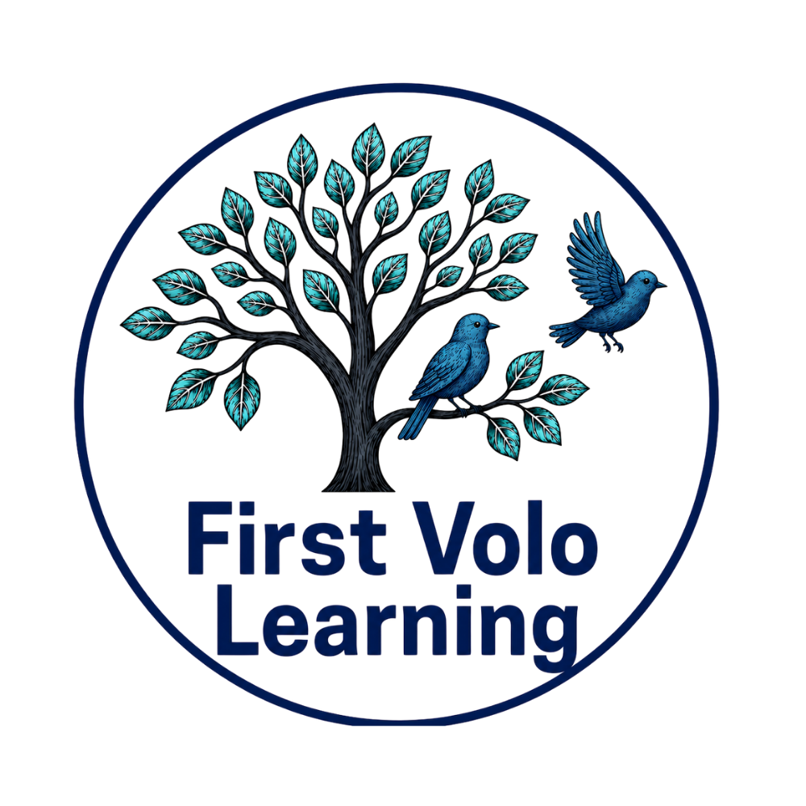

GETTING STARTED & SAVING
Story Builder User Guide
Follow the teaching cycle and learn the difference between My Stories, Cloud Sync and learner evidence.
Open the user guide →
FIRST VOLO STORY BUILDER
Tools for Narrative-Language Instruction & Support
Resources for selecting meaningful narrative-language targets, planning instruction, supporting students, and connecting targeted work back to complete storytelling.
GETTING STARTED & SAVING
Follow the teaching cycle and learn the difference between My Stories, Cloud Sync and learner evidence.
Open the user guide →TARGET SELECTION & PLANNING
Choose a grade band and narrative-language target to generate clear objective wording, standards and evidence rationale, possible supports, and progress-monitoring ideas.
Build a narrative-language target →IN STORY BUILDER
Return to the educator Story Goal controls to select a narrative-language target, review its teaching focus, and use support only when needed.
Open Story Goal controls →